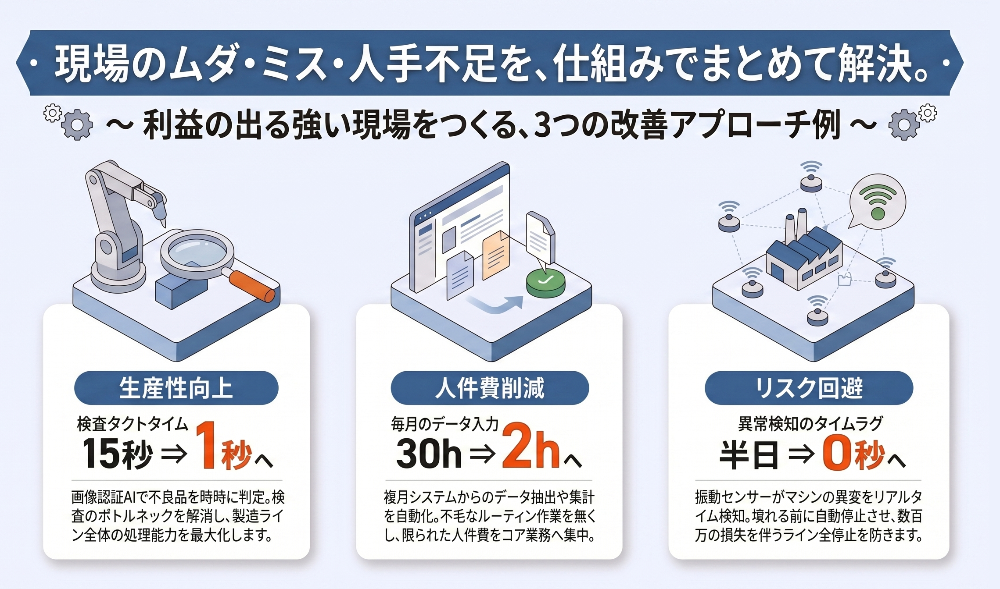
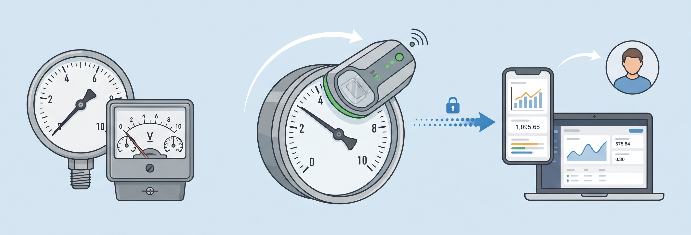
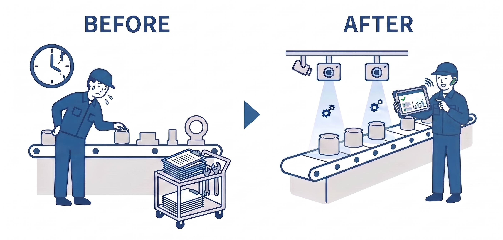
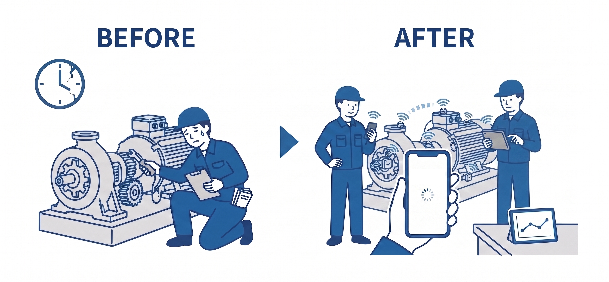
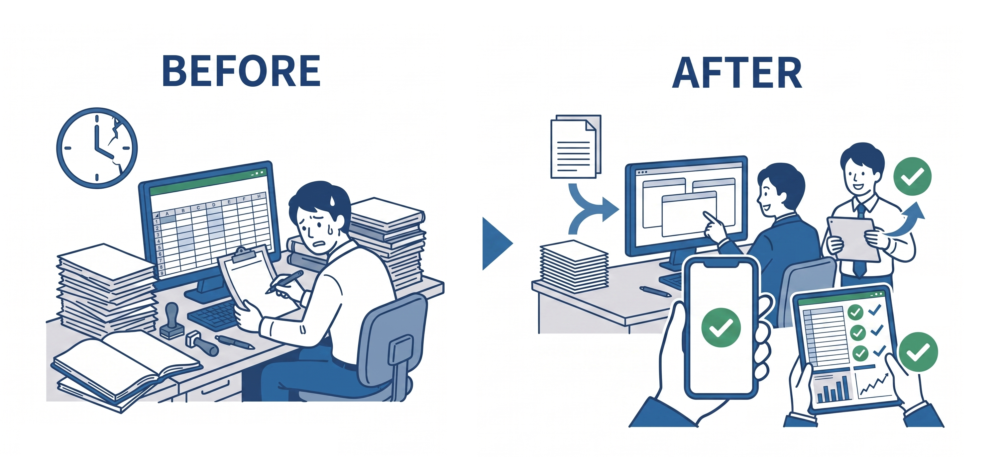

こんなお困りごと、ありませんか？
- ちょっとした改善をしたいけど、大手に頼むほどではない…
- 技術を導入しても効果が出るか不安。まずは小さく試したい…
- 現場の人材不足で、技術を導入する余裕がない…
- 新しいことしたいが、どこから手を付けていいかわからない…
- 技術導入で現場と対立したくない…
IoT/AI技術の導入支援、小規装置の試作開発、DX伴走、IoT人材教育ほか


弊社は、「人材不足」や「技術導入の遅れ」、「予算の制約」といった中小製造業の抱える諸問題を、小さな改善から解決へと導く支援を行っています。
最大の強みは、ハードウェア、ソフトウェア、AIまでを一気通貫で対応できる点です。複数業者との煩雑な調整が発生しないため、管理費や中間マージンといった無駄なコストを徹底的に削減し、圧倒的な低費用を実現します。
業種を問わず、技術のことが分からなくても問題ありません。新規技術の効果を見極めながら、現場の課題に合わせた“ちょうどいい”技術を柔軟に、かつ超短納期でもご提案します。「小さな相談」や「小規模な案件」から、貴社の「こうなったらいいな」を形にします。


ちょっとした技術的な疑問や方向性の確認などを、対面でご相談いただけます。
既設の各種アナログメータに専用のデバイスを取り付け、自動で読み取ります。読み取ったデータはお客様のPCやスマホへ直接送信します。

現場にセンサーを設置し、データの収集・処理・可視化までを一貫して支援します。ダッシュボード等を活用し、現場の状況をリアルタイムに“見える化”します。
現場担当者向けに、座学と実技を組み合わせた8時間のカリキュラムで教育を行います。導入システムを現場の"道具"として定着させ、自社で運用・改善し続けられる体制を構築します。
AI処理を組み込んだエッジデバイスの試作を行います。現場でセンサデータや画像データを自律的に処理し、即時の判断や制御が可能です。
マイコンを用いて、バルブやスイッチなどの操作を自動化する小規模装置を試作します。
（※過酷な環境や長時間の連続稼働を想定される場合は、別途ご相談ください。）
見える化やデータ蓄積などのIoT技術について、本格導入前に効果を検証いただけます。
画像認識や異常検知などのAI技術について、本格導入前に効果を検証いただけます。
3DCADを用いて、目的や使用環境に合わせた部品の設計を行います。
樹脂素材による3Dプリント造形を行います。
Excelなどを使った定型業務を自動化し、作業効率を向上させます。
IoT導入やDX推進を、定期的な面談を通じて伴走支援します。
補助金の申請からDX認定取得まで、綿密に連携して伴走します。
✔ これらの価格は今後変動する可能性があります。
✔ 個別のお見積りでは、将来的に削減が見込めるコストをベースとし、所定の割合を掛けて算出した金額を料金として提示いたします。

「現場データの見える化支援」「現場DX・内製化支援プログラム」の提供例を、時間軸を添えてご案内します。おおまかなスケジュールの目安としてご活用ください。
まずはメールでお気軽にご連絡ください。課題は曖昧でも構いません。すぐに返信いたします。
面談や現地調査にて、「何ができるか」を具体的に深掘りします。ここで無理のない最適な構成とお見積りをご提案します。
実際にプロトタイプを製作し、現場で実証実験（PoC）を行います。お客様毎の環境で「本当に使えるか・効果があるか」を検証します。
センサーで取得したデータについて、スマホやPCで見やすい画面を構築します。異常時の通知機能など、現場の方が直感的に状況を把握できる状態へ仕上げます。
3Dプリンタによる専用筐体（ケース）の製作や、操作画面の細かな調整を行い、現場に長く馴染む、壊れにくい実戦的なシステムへと磨き上げます。
導入したシステムを現場の「頼れる道具」として使いこなせるようレクチャーします。自社で改善し続けられる「IoT人材」の育成まで、伴走して支援します。

課題検査員の熟練度で判定がバラつき、見落としリスクが不安。教育にも時間がかかる。
解決策カメラを増設し、Pythonによる独自のAI判定モデルを構築・導入。
効果検査時間を大幅に削減。判定基準を数値で一定化し、新人でも即戦力となる体制を実現。
課題市販のIoT機器は多機能すぎて高価。また、現場の狭いスペースに設置できる治具がない。
解決策必要な機能だけに絞ったデバイスをオーダーメイドで開発。3Dプリンタで現場にジャストフィットする専用筐体を製作。
効果導入コストを大幅に削減。また測定や記録の作業が不要に。

課題24時間稼働の現場で異常検知が遅れ、過去に大きなロスが発生。
解決策無線センサーを後付けし、スマホへの自動通知システムを構築。
効果定期巡回が不要になり、異常時は即座にスマホへ通知。設備停止による損失を最小限に。
課題不良品が出ても原因が「不明」のまま。現場の勘頼みの調整で再現性がない。
解決策電流・振動センサーで設備の「健康状態」をグラフ化。
効果故障の前兆や不良発生時の条件を特定。属人的な管理から、データに基づく品質管理へ転換。

課題現場の紙日報をExcelに転記したり、大量のPDFから請求データを作る作業で、本来の管理業務が圧迫されている。
解決策複雑なExcel操作やPDF読み取りを自動化する、専用のPythonプログラムを開発。
効果集計作業を「ボタン一つ」で完了。ミスがゼロになり、事務所スタッフが他業務に注力できる体制へ。
温度と湿度をリアルタイムに取得し、ダッシュボードで可視化しています。
他にも振動や電流等のあらゆる値を取得でき、データを見える化・蓄積できます。
DXに向けての"はじめの一歩"としていかがでしょうか？
例として、ボルト/ナット/ワッシャをリアルタイムに検出と判別をしています。
実装コストは低めで、比較的簡単に導入することができます。
例として、錠剤の不良箇所を検出しています。
不良品のデータを集めるのが難しい場合でも、導入することができます。
例として、布製品の不良箇所を検出しています。
モノの形だけでなく、布目や木目といったパターン模様についても検査することができます。
電子機器を収納するための筐体を3DCADで設計し、3Dプリンタで部品を造形しています。
設計のみ/造形のみのご依頼も承ります。また、超短納期も対応可能です。
例として、手書き風の数字を認識しています。
人力での処理が大変だったり、宝の持ち腐れとなってしまっている手書きの書類はありませんか？貴社にピッタリのシステムを開発し、どんな量でも一瞬でデータ化します。
準備中です…
※ 動画は順次追加予定です。こんなデモ動画が観たい！というリクエストも大歓迎です😆
メール：ometechlab@gmail.com (オメテック 佐藤まで)
または、こちらの お問い合わせフォーム から。（Googleフォームが開きます）電話：ご発注いただいたお客様のみの対応となります。
課題は明確でなくても構いません。こんなのできる？も歓迎します。
お気軽にご相談ください。
※ お問い合わせの際には、以下の項目を含めて頂けるとスムーズです。
・貴社の課題、あるいはお困りごと
→ 導入したい技術が明確である場合には、その技術と導入対象の詳細を教えてください。
・導入までの大まかなご希望スケジュール
・予算感
・現場見学の可否